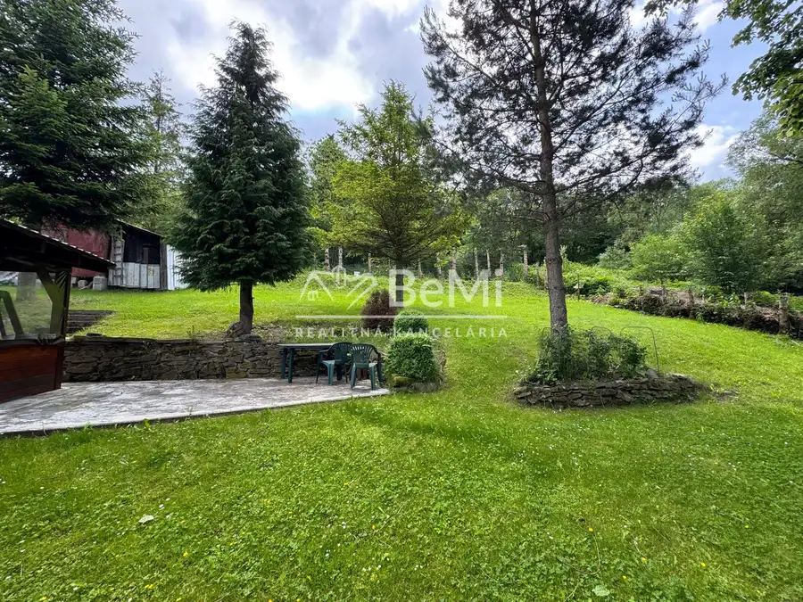
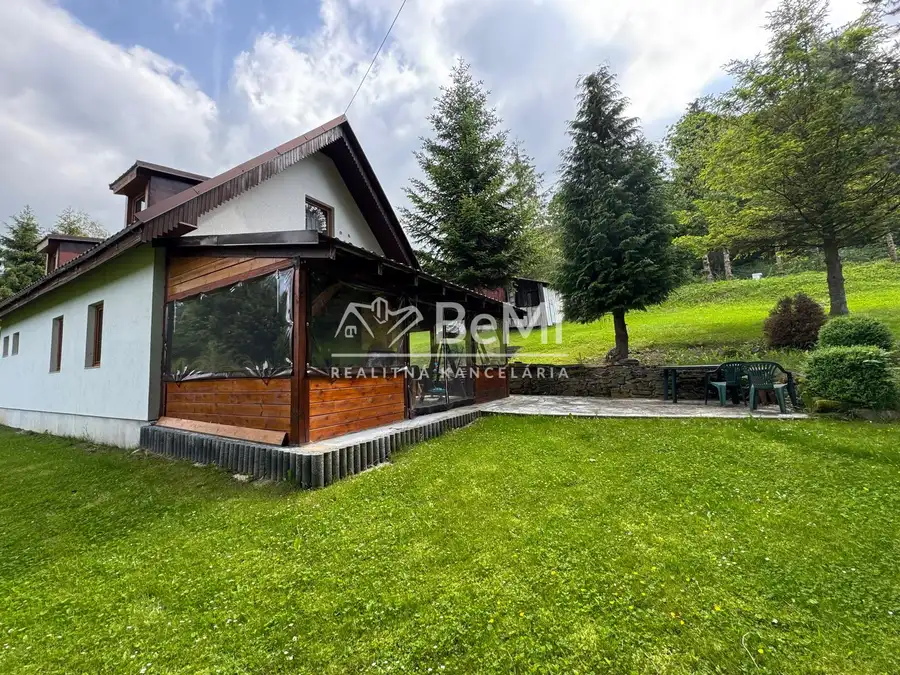
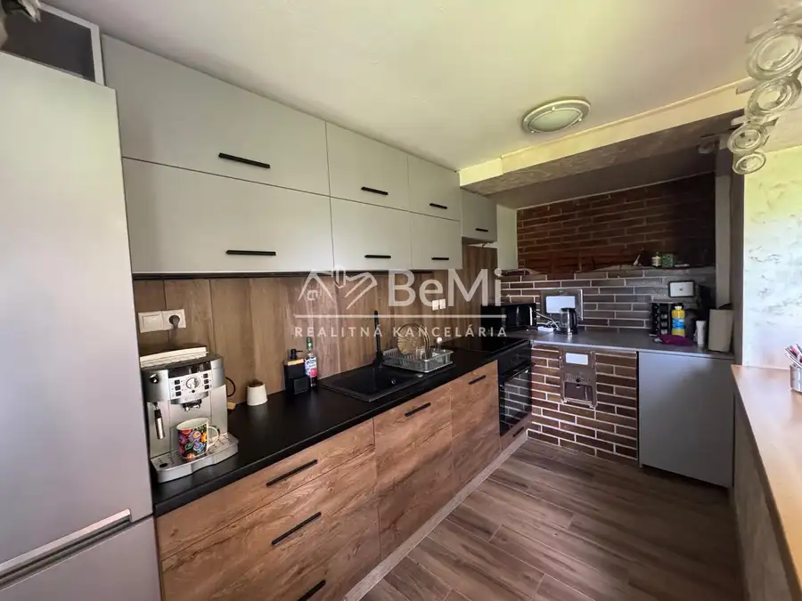
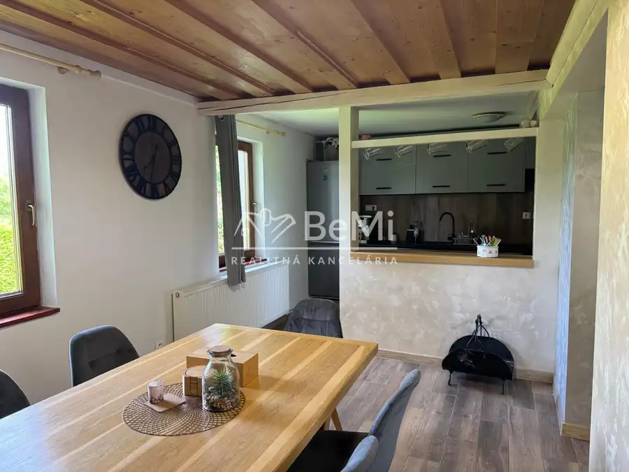
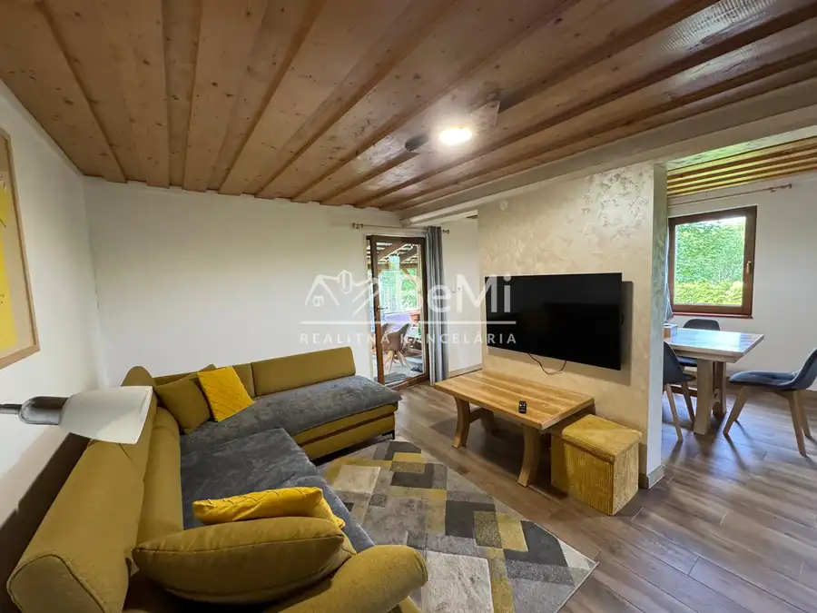
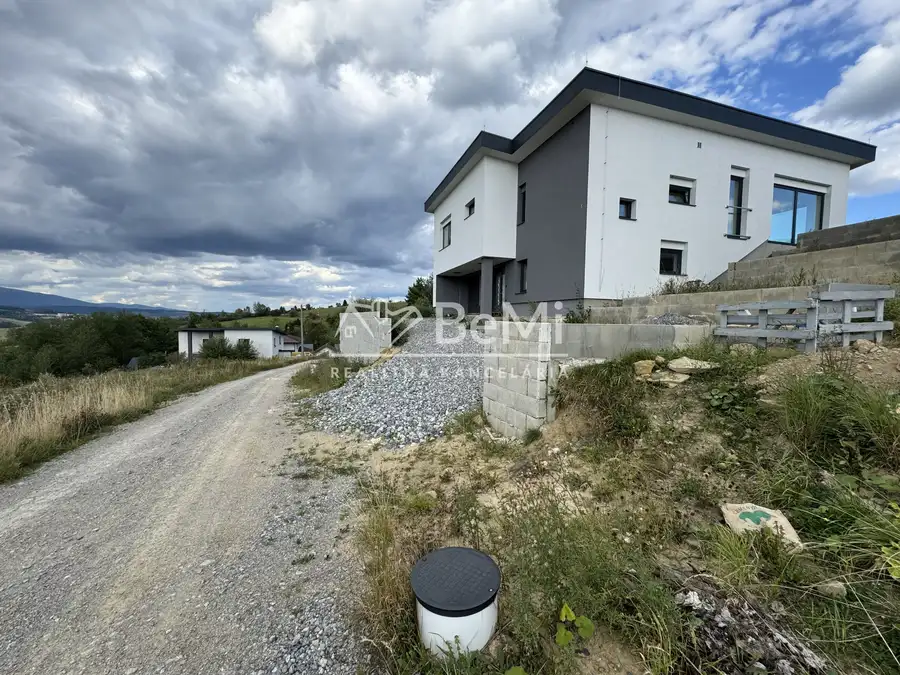
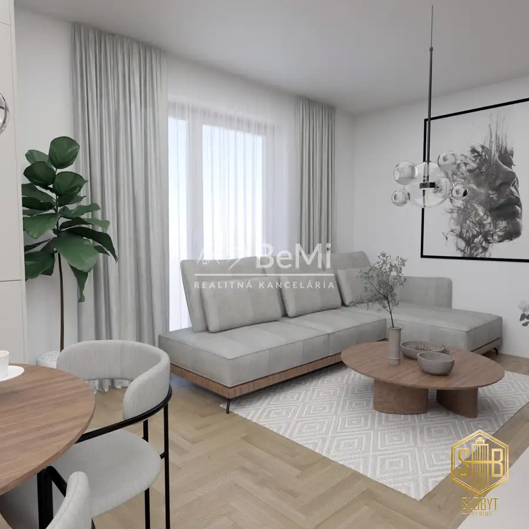
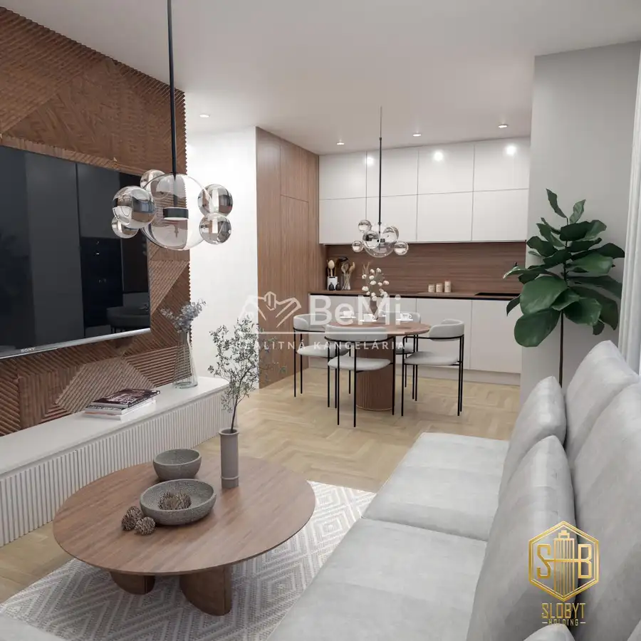

Pekná chata v nádhernom prostredí v Oravskom Veselom
Oravské Veselé





- StavČiastočná rekonštrukcia
- VlastníctvoOsobné
O nehnuteľnosti
Ponúkame na predaj peknú chatu v obci Oravské Veselé. Nachádza sa v krásnom prostredí Oravy, ktoré je ideálne na oddych aj aktívnu turistiku (obec je východiskovým bodom pre výstup na vrch Piľsko). V okolí sa nachádzajú aj reštaurácie a wellness zariadenia.Základné informácie:• Rozloha pozemku: 872 m2• Zastavaná plocha: 74 m2Technický stav a konštrukcia:• Chata bola postavená pred 20 rokmi na pevných betónových základoch.• Stavebný materiál: Ytong (25 cm obvodové múry), zateplené 7 cm polystyrénom.• Druhé podlažie je postavené na drevených trámoch, izby pod strechou sú zateplené minerálnou vatou.• Okná: na chate sú drevené (dvojsklo), na terase sú plastové.• Pred 5 rokmi prebehla rekonštrukcia: menila sa plechová strešná krytina a urobila sa nová terasa.Vykurovanie a inžinierske siete:• Kúrenie: Krb (8-ročná krbová vložka s prerobeným skeletom), ktorý vykuruje radiátory v celej chate. Ďalšou možnosťou je kachľová pec v kuchyni. K dispozícii je aj elektrické podlahové kúrenie, ktoré je možné ovládať na diaľku cez aplikáciu.• Voda: vlastný prameň (zdieľaný s jedným susedom).• Siete a vybavenie: zavedená elektrina, internet a kamerový systém.Prístup na pozemok:• Prístup k chate je po nespevnenej ceste, k nehnuteľnosti sa odporúča prístup autom s vyšším podvozkom.Cena: 169000€Názor makléra: Nehnuteľnosť odporúčam tým, ktorí hľadajú miesto na relax aj guláše s rodinou. Ľuďom, ktorí ocenia 100ročnú lipu a zvuky prírody. Cena je primeraná Prostredníctvom nášho hypotekárneho centra Vám odporučíme najvýhodnejšiu hypotéku na kúpu danej nehnuteľnosti. NAŠE CENY SÚ VRÁTANE PROVÍZIE ZA KOMPLETNÝ SERVIS A SÚ SCHVÁLENÉ MAJITEĽOMPre bližšie informácie ma kontaktujte na 0908930674 alebo vrabova@realitybemi.sk
Parametre
- Druh
- Chalupa, rekreačný domček
- Dátum zverejnenia
- 25. 06. 2026
- Plocha pozemku
- 0 m²
- Stav nehnuteľnosti
- Čiastočná rekonštrukcia
- Typ
- Predaj
- Vlastníctvo
- Osobné
- Zastavaná plocha
- 74 m²
- Úžitková plocha
- 0 m²
Kde to je


Mohlo by Vás zaujímať

DomNové 295 000 €Ponúkame na predaj krásny rodinný dom v Ťapešove Ťapešovo 215 m²
BytNové 128 870 €Ponúkame na predaj 2-izbový apartmán 46m2 - Námestovo Polom Námestovo 2-izbový
BytNové 163 920 €Na predaj nový 3-izbový apartmán s balkónom - Námestovo Námestovo 3-izbový